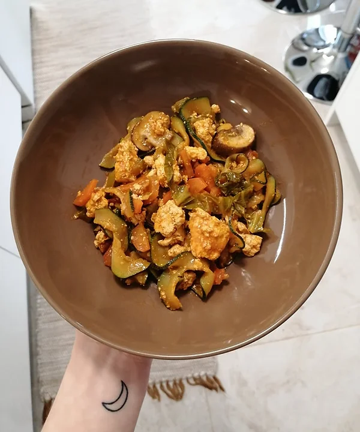

Zoodles
Tempo de preparação
10min
Horas de Cozimento
20min
Tempo Total
30min
Porções
2

Ingredientes
- ½ courgette espiralizada
- 1 cenoura cortada em meias rodelas
- ½ pimento verde cortado aos cubos pequenos
- 2 folhas de couve coração cegadas
- 4 cogumelos laminados
- ½ bloco de tofu esmagado com as mãos
- ½ tomate cortado aos cubos
- polpa de tomate q.b
- sal q.b
- pimenta preta q.b
- Espiralize a courgette
Vegetais:
- Numa sertã anti aderente coloque um fio de azeite e salteie a cenoura por 5 minutos. Adicione o pimento verde, os cogumelos, o tomate cortado aos cubos e salteie até os cogumelos estarem dourados.
- Adicione o tofu esmagado e tempere com sal e pimenta preta. Deixe saltear por mais 5 minutos e adicione a couve coração. Quando esta estiver quase cozida, junte a polpa de tomate e a courgette em forma de noodles.
- Deixe saltear até a courgette estar cozida e está pronta os nossos Zoodles!